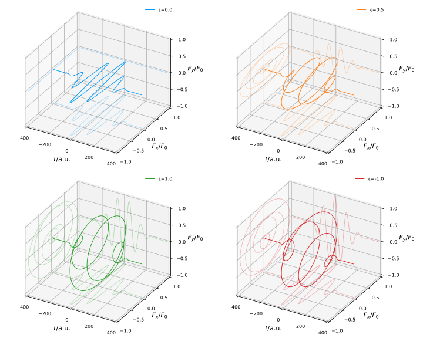

Manual: The Lasers Module
eTraj.Lasers — Modulemodule LasersThe Laser module contains abstraction of laser and provides some pre-defined lasers for use.
eTraj.Lasers.Laser — Typeabstract type LaserRepresents an abstract laser, supertype of all lasers.
The Monochromatic Lasers
eTraj.Lasers.MonochromaticLaser — Typeabstract type MonochromaticLaser <: LaserRepresents an abstract monochromatic laser.
A typical monochromatic laser is composed of the carrier wave $\cos (\omega t+\phi)$ and the envelope function $f_{\rm{env}}(t)$ (which is assumed to have a peak amplitude of 1). Given the amplitude of the vector potential $A_0$, the time-dependent vector potential of the laser, which we assume to propagate in $z$ direction and have $x$ axis as the principle axis of polarization, reads
\[\begin{equation} \AA(t) = A_0 f_{\rm{env}}(t) [ \cos(\omega t+\phi)\hat{\bm{x}} + \varepsilon \sin(\omega t+\phi) \hat{\bm{y}} ], \end{equation}\]
with $\omega$ the laser angular frequency, $\phi$ the carrier-envelope phase (CEP) and $\varepsilon$ the ellipticity.
In the Lasers module there are some available monochromatic laser objects implemented for use, namely Cos4Laser, Cos2Laser and GaussianLaser, which differ from each other in their envelope functions $f_{\rm{env}}(t)$, and they are all subtypes of the MonochromaticLaser base type.
Cos4Laser
The Cos4Laser's vector potential has a $\cos^4$-shaped envelope function:
\[\begin{equation} f_{\rm{env}}^{\rm{cos4}} = \begin{dcases} \ \cos^4 \left(\frac{\omega(t-t_0)}{2N}\right), & -NT/2 \leq t-t_0 \leq NT/2, \\ \ 0, & \rm{otherwise}, \end{dcases} \end{equation}\]
where $N$ is the total cycle number, $T=2\pi/\omega$ is the period and $t_0$ the peak time.
eTraj.Lasers.Cos4Laser — Typestruct Cos4Laser <: MonochromaticLaser <: LaserRepresents a monochromatic elliptically polarized laser field with Cos4-shape envelope propagating in z direction.
eTraj.Lasers.Cos4Laser — MethodCos4Laser(peak_int, wave_len|ang_freq, cyc_num|duration, ellip [,azi=0.0] [,cep=0.0] [,t_shift=0.0]) <: MonochromaticLaserInitializes a new monochromatic elliptically polarized laser field with Cos4-shape envelope.
Parameters
peak_int: Peak intensity of the laser (numerically in W/cm² or aUnitful.Quantity).wave_len: Wavelength of the laser (numerically in nm or aUnitful.Quantity).ang_freq: Angular frequency of the laser (numerically in a.u. or aUnitful.Quantityof single-photon energy).cyc_num: Number of cycles of the laser.duration: Duration of the laser (numerically in a.u. or aUnitful.Quantity).ellip: Ellipticity of the laser [-1≤ε≤1, 0 indicates linear polarization and ±1 indicates circular polarization].azi: Azimuth angle of the laser's polarization's principle axis relative to x axis (numerically in radian or aUnitful.Quantity) (optional, default 0).cep: Carrier-Envelope-Phase of the laser (numerically in radian or aUnitful.Quantity) (optional, default 0).t_shift: Time shift of the laser (numerically in a.u. or aUnitful.Quantity) relative to the peak (optional, default 0).
Examples
julia> l = Cos4Laser(peak_int=4e14, wave_len=800.0, cyc_num=2.0, ellip=1.0)
[MonochromaticLaser] Envelope cos⁴, peak intensity 4.0e+14 W/cm², wavelen=800 nm, 2 cycle(s), ε=1 [circularly polarized]
julia> using eTraj.Units
julia> l = Cos4Laser(peak_int=0.4PW/cm^2, ang_freq=1.5498eV, duration=5.34fs, ellip=0.0)
[MonochromaticLaser] Envelope cos⁴, peak intensity 4.0e+14 W/cm², wavelen=800.00 nm, 2.00 cycle(s), ε=0 [linearly polarized]
Cos2Laser
The Cos2Laser has a $\cos^2$-shaped envelope function, similar to that of the Cos4Laser:
\[\begin{equation} f_{\rm{env}}^{\rm{cos2}} = \begin{dcases} \ \cos^2 \left(\frac{\omega(t-t_0)}{2N}\right), & -NT/2 \leq t-t_0 \leq NT/2, \\ \ 0, & \rm{otherwise}. \end{dcases} \end{equation}\]
eTraj.Lasers.Cos2Laser — Typestruct Cos2Laser <: MonochromaticLaser <: LaserRepresents a monochromatic elliptically polarized laser field with Cos2-shape envelope propagating in z direction.
eTraj.Lasers.Cos2Laser — MethodCos2Laser(peak_int, wave_len|ang_freq, cyc_num|duration, ellip [,azi=0.0] [,cep=0.0] [,t_shift=0.0]) <: MonochromaticLaserInitializes a new monochromatic elliptically polarized laser field with Cos2-shape envelope.
Parameters
peak_int: Peak intensity of the laser (numerically in W/cm² or aUnitful.Quantity).wave_len: Wavelength of the laser (numerically in nm or aUnitful.Quantity).ang_freq: Angular frequency of the laser (numerically in a.u. or aUnitful.Quantityof single-photon energy).cyc_num: Number of cycles of the laser.duration: Duration of the laser (numerically in a.u. or aUnitful.Quantity).ellip: Ellipticity of the laser [-1≤ε≤1, 0 indicates linear polarization and ±1 indicates circular polarization].azi: Azimuth angle of the laser's polarization's principle axis relative to x axis (numerically in radian or aUnitful.Quantity) (optional, default 0).cep: Carrier-Envelope-Phase of the laser (numerically in radian or aUnitful.Quantity) (optional, default 0).t_shift: Time shift of the laser (numerically in a.u. or aUnitful.Quantity) relative to the peak (optional, default 0).
Examples
julia> l = Cos2Laser(peak_int=4e14, wave_len=800.0, cyc_num=2.0, ellip=1.0)
[MonochromaticLaser] Envelope cos², peak intensity 4.0e+14 W/cm², wavelen=800 nm, 2 cycle(s), ε=1 [circularly polarized]
julia> using eTraj.Units
julia> l = Cos2Laser(peak_int=0.4PW/cm^2, ang_freq=1.5498eV, duration=5.34fs, ellip=0.0)
[MonochromaticLaser] Envelope cos², peak intensity 4.0e+14 W/cm², wavelen=800.00 nm, 2.00 cycle(s), ε=0 [linearly polarized]
GaussianLaser
The GaussianLaser has a Gaussian-shaped envelope function, which is the most commonly used:
\[\begin{equation} f_{\rm{env}}^{\rm{Gauss.}} = \ee^{-(t-t_0)^2/2\tau_\sigma^2} = \ee^{- \ln{2}~\cdot~(t-t_0)^2/\tau_{\rm{FWHM}}^2}, \end{equation}\]
where $\tau_\sigma$ is the half temporal width of the laser and $\tau_{\rm{FWHM}}=2\sqrt{\ln{2}}\ \tau_\sigma$ denotes the laser's intensity profile's temporal FWHM (full-width at half maxima).
eTraj.Lasers.GaussianLaser — Typestruct GaussianLaser <: MonochromaticLaser <: LaserRepresents a monochromatic elliptically polarized laser field with Gaussian-shape envelope propagating in z direction.
eTraj.Lasers.GaussianLaser — MethodGaussianLaser(peak_int, wave_len|ang_freq, spread_cyc_num|spread_duration|FWHM_duration, ellip [,azi=0.0] [,cep=0.0] [,t_shift=0.0]) <: MonochromaticLaserInitializes a new monochromatic elliptically polarized laser field with Gaussian-shape envelope.
Parameters
peak_int: Peak intensity of the laser (numerically in W/cm² or aUnitful.Quantity).wave_len: Wavelength of the laser (numerically in nm or aUnitful.Quantity).ang_freq: Angular frequency of the laser (numerically in a.u. or aUnitful.Quantityof single-photon energy).spread_cyc_num: Temporal width (converted to cycle numbers) of the laser, namely σ.spread_duration: Temporal width of the laser (numerically in a.u. or aUnitful.Quantity).FWHM_duration: Temporal FWHM (Full Width at Half Maxima) of the intensity profile of the laser (numerically in a.u. or aUnitful.Quantity).ellip: Ellipticity of the laser [-1≤ε≤1, 0 indicates linear polarization and ±1 indicates circular polarization].azi: Azimuth angle of the laser's polarization's principle axis relative to x axis (numerically in radian or aUnitful.Quantity) (optional, default 0).cep: Carrier-Envelope-Phase of the laser (numerically in radian or aUnitful.Quantity) (optional, default 0).t_shift: Time shift of the laser (numerically in a.u. or aUnitful.Quantity) relative to the peak (optional, default 0).
Examples
julia> l = GaussianLaser(peak_int=4e14, wave_len=800.0, spread_cyc_num=2.0, ellip=1.0)
[MonochromaticLaser] Envelope Gaussian, peak intensity 4.0e+14 W/cm², wavelen=800 nm, temporal width 4 cycle(s) [FWHM 12.57 fs], ε=1 [circularly polarized]
julia> using eTraj.Units
julia> l = GaussianLaser(peak_int=0.4PW/cm^2, ang_freq=1.5498eV, FWHM_duration=12.57fs, ellip=0.0)
[MonochromaticLaser] Envelope Gaussian, peak intensity 4.0e+14 W/cm², wavelen=800.00 nm, temporal width 4.00 cycle(s) [FWHM 12.57 fs], ε=0 [linearly polarized]
BichromaticLaser
Apart from monochromatic lasers, the BichromaticLaser which combines two MonochromaticLaser is also implemented.
eTraj.Lasers.BichromaticLaser — Typestruct BichromaticLaser <: LaserRepresents a bichromatic laser field which consists of two MonochromaticLasers.
eTraj.Lasers.BichromaticLaser — MethodBichromaticLaser(l1::MonochromaticLaser, l2::MonochromaticLaser [,delay=0.0]) <: LaserInitializes a new BichromaticLaser with two MonochromaticLasers.
Parameters
l1, l2::MonochromaticLaser: TwoMonochromaticLasers.delay: Time delay ofl2respective tol1(numerically in a.u. or aUnitful.Quantity).
Examples
julia> using eTraj.Units
julia> l = BichromaticLaser(l1=Cos4Laser(peak_int=1.0PW/cm^2, wave_len=800nm, cyc_num=10, ellip=1), l2=Cos4Laser(peak_int=1.0PW/cm^2, wave_len=400nm, cyc_num=20, ellip=-1), delay=0.5fs)
[BichromaticLaser] delay Δt = 20.67 a.u. (0.50 fs)
├ [MonochromaticLaser] Envelope cos⁴, peak intensity 1.0e+15 W/cm², wavelen=800 nm, 10 cycle(s), ε=1 [circularly polarized]
└ [MonochromaticLaser] Envelope cos⁴, peak intensity 1.0e+15 W/cm², wavelen=400 nm, 20 cycle(s), ε=-1 [circularly polarized]Available Properties
The available properties of the laser fields are listed below. The "·" sign indicates that the property is available due to inheritance from the supertype.
To obtain a property of the laser field, invoke the property as a method and pass the laser object as an argument. The following shows an example:
julia> using eTraj.Lasersjulia> l = Cos4Laser(peak_int=1e14, wave_len=800.0, cyc_num=10, ellip=0)[MonochromaticLaser] Envelope cos⁴, peak intensity 1.0e+14 W/cm², wavelen=800 nm, 10 cycle(s), ε=0 [linearly polarized]julia> LaserA0(l)0.9372492077964156julia> Ax = LaserAx(l)#4 (generic function with 1 method)julia> Ax(0.0)0.9372492077964156
Laser | MonochromaticLaser | Cos4Laser | Cos2Laser | GaussianLaser | BichromaticLaser | |
|---|---|---|---|---|---|---|
LaserFx | ✔ | · | · | · | · | · |
LaserFy | ✔ | · | · | · | · | · |
LaserAx | ✔ | · | · | · | · | · |
LaserAy | ✔ | · | · | · | · | · |
PeakInt | ✔ | · | · | · | ||
WaveLen | ✔ | · | · | · | ||
CycNum | ✔ | ✔ | ||||
SpreadCycNum | ✔ | |||||
SpreadDuration | ✔ | |||||
FWHM_Duration | ✔ | |||||
Ellipticity | ✔ | · | · | · | ||
Azimuth | ✔ | · | · | · | ||
AngFreq | ✔ | · | · | · | ||
Period | ✔ | · | · | · | ||
CEP | ✔ | · | · | · | ||
LaserF0 | ✔ | · | · | · | ||
LaserA0 | ✔ | · | · | · | ||
UnitEnvelope | ✔ | · | · | · | ||
KeldyshParameter | ✔ | · | · | · | ||
TimeShift | ✔ | ✔ | ✔ | |||
Laser1 | ✔ | |||||
Laser2 | ✔ | |||||
Delay21 | ✔ |
Ellipticity
The ellipticity $\varepsilon$ defines the polarization type of the laser field. For special cases, 0 indicates linear polarization and ±1 indicates circular polarization. The electric field rotates clockwise for positive ellipticities and counter-clockwise for negative ones.

Azimuth of Principle Axis
The azimuth angle $\varphi$ of the principle axis defines a clockwise rotation of the laser field in the polarization plane.

Carrier-Envelope-Phase (CEP)
The carrier-envelope-phase (CEP) $\phi$ is the difference between the optical phase of the carrier wave and the envelope position. For few-cycle laser pulses, the influence of the CEP to the laser-matter interaction becomes significant.

List of Property Documentations
eTraj.Lasers.LaserFx — FunctionLaserFx(l::Laser) -> Fx(t)Gets the time-dependent x component of the electric field strength under dipole approximation.
eTraj.Lasers.LaserFy — FunctionLaserFy(l::Laser) -> Fy(t)Gets the time-dependent y component of the electric field strength under dipole approximation.
eTraj.Lasers.LaserAx — FunctionLaserAx(l::Laser) -> Ax(t)Gets the time-dependent x component of the vector potential under dipole approximation.
eTraj.Lasers.LaserAy — FunctionLaserAy(l::Laser) -> Ay(t)Gets the time-dependent y component of the vector potential under dipole approximation.
eTraj.Lasers.PeakInt — FunctionPeakInt(l::MonochromaticLaser)Gets the peak intensity of the laser (in W/cm²).
eTraj.Lasers.WaveLen — FunctionWaveLen(l::MonochromaticLaser)Gets the wavelength of the laser (in nm).
eTraj.Lasers.CycNum — FunctionCycNum(l::{Cos2Laser, Cos4Laser})Gets the cycle number of the laser.
eTraj.Lasers.SpreadCycNum — FunctionSpreadCycNum(l::GaussianLaser)Gets the temporal width of the laser, namely σ (converted to cycle numbers).
eTraj.Lasers.SpreadDuration — FunctionSpreadDuration(l::GaussianLaser)Gets the temporal width of the laser, namely σ (in a.u.).
eTraj.Lasers.FWHM_Duration — FunctionFWHM_Duration(l::GaussianLaser)Gets the temporal FWHM (Full Width at Half Maxima) of the intensity profile of the laser (in a.u.).
eTraj.Lasers.Ellipticity — FunctionEllipticity(l::MonochromaticLaser)Gets the ellipticity of the laser.
eTraj.Lasers.Azimuth — FunctionAzimuth(l::MonochromaticLaser)Gets the azimuth angle of the laser's polarization's principle axis relative to x axis (in radians).
eTraj.Lasers.AngFreq — FunctionAngFreq(l::MonochromaticLaser)Gets the angular frequency (ω) of the laser (in a.u.).
eTraj.Lasers.Period — FunctionPeriod(l::MonochromaticLaser)Gets the period of the laser (in a.u.).
eTraj.Lasers.CEP — FunctionCEP(l::MonochromaticLaser)Gets the Carrier-Envelope Phase (CEP) of the laser.
eTraj.Lasers.LaserF0 — FunctionLaserF0(l::MonochromaticLaser)Gets the peak electric field intensity of the laser (in a.u.).
eTraj.Lasers.LaserA0 — FunctionLaserA0(l::MonochromaticLaser)Gets the peak vector potential intensity of the laser (in a.u.).
eTraj.Lasers.UnitEnvelope — FunctionUnitEnvelope(l::MonochromaticLaser) -> env(t)Gets the unit envelope function (the peak value is 1) of the laser field.
eTraj.Lasers.KeldyshParameter — FunctionKeldyshParameter(l::MonochromaticLaser, Ip)Gets the Keldysh parameter γ₀ of the laser, given the ionization energy Ip (in a.u.).
eTraj.Lasers.TimeShift — FunctionTimeShift(l::{Cos2Laser, Cos4Laser, GaussianLaser})Gets the time shift of the laser relative to the peak (in a.u.).
eTraj.Lasers.Laser1 — FunctionLaser1(l::BichromaticLaser)Gets the first MonochromaticLaser component in l.
eTraj.Lasers.Laser2 — FunctionLaser2(l::BichromaticLaser)Gets the second MonochromaticLaser component in l.
eTraj.Lasers.Delay21 — FunctionDelay21(l::BichromaticLaser)Gets the delay of the second laser respective to the first in l.